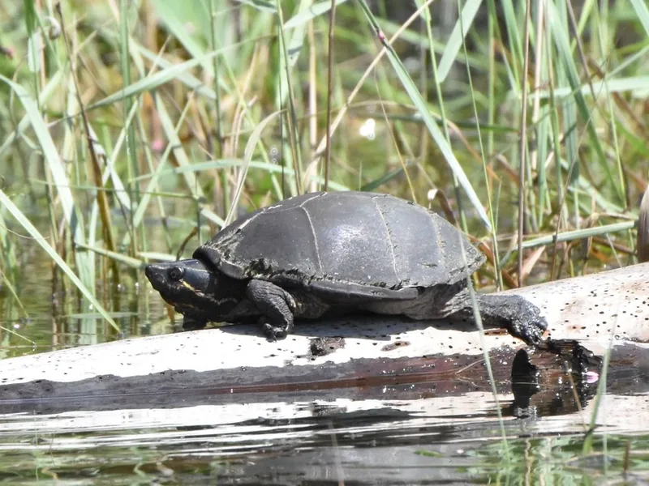
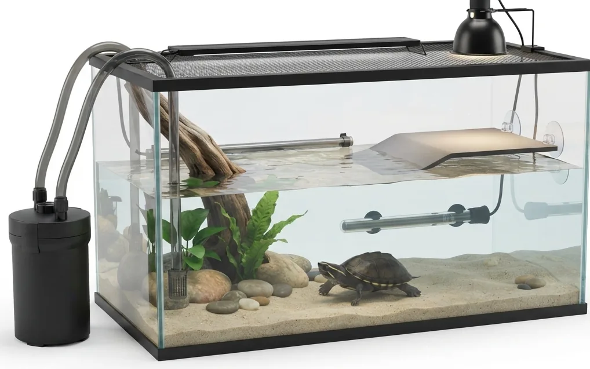

北米東部の池や緩流に暮らす小型の水棲ガメ。一般的な成体の甲長は5〜12cm、資料に残る最大直甲長は13.7cmです。当サイトの目安は45cmで開始・成体60cm以上。最初から成体用の広い水槽を、幼体に合う浅い水と足場で整える方法もあります。体は小さくても、水換えと温度・照明の管理は欠かせません。

成長の速さには個体差があります。年齢だけで水槽の大きさを決めず、甲長と動ける床面積を見て広げます。人の気配に慣れ、餌やり時に水面へ上がってくる個体もいます。底を歩き回る姿を、触らず見守る楽しみがあります。
一般的な成体の甲長は5〜12cmですが、13.7cmの記録もあります。成体用の水槽は60cm以上を当サイトの目安とし、陸場や隠れ家を入れても十分に動ける広さを確保してください。小型種でも、長年続く水換えや設備の点検は必要です。
コンパクトで管理しやすいように見えるが、小さな水槽に対して食べる量が多いため、水換えなしではフィルターだけで水質を保つのが難しい。食べ残しやフンはこまめに取り除き、水質を測って部分換水の量と頻度を調整します。透明で臭わない水でも安全とは限りません。水槽の汚れによる臭いと、ストレス時の臭腺からのにおいは分けて考えましょう。
ニオイガメはアメリカ東部・カナダ南部に広く分布します。浅い池・沼・緩流の河川を好み、水草が茂り底が泥や砂の環境に生息しています。底を歩き、隠れ場所や水草を利用します。野生の生息水深を、そのまま飼育水槽の安全な深さと考えないでください。
英名「Common Musk Turtle（ムスクガメ）」は、威嚇時に腹部の臭腺から分泌液を出す習性から来ています。分泌の頻度には個体差があります。むやみに持ち上げず、落ち着ける隠れ家を用意しましょう。水の汚れによる臭いには、別に水質管理が必要です。
野生での食性は動物食が中心で、水生昆虫・甲殻類・小魚・貝類・両生類などを食べています。植物性食品（藻類・水草）も摂りますが、動物性食品への嗜好が強い種です。

この環境を作るための用品候補は、このページ下部の「推奨機材セット」にまとめています（予算・成長段階で選べる3プラン）。
水質と温度に加え、無理なく呼吸できる足場、体を乾かせる陸場、照明をそろえます。水温・バスキングの目安とUVBの案内は、Royal Veterinary Collegeの本種用ケアシートを参考にしています。
カメ専用人工フード（カメプロス・レプトミンなど）を主食にできます。冷凍赤虫やエビなどは補助にとどめ、それだけを主食にしないでください。食べない時は餌を替えるだけで済ませず、水温や体調も確認します。
給餌頻度はベビーは毎日少量、成体は2〜3日に1回が目安です。食べ残しは水質悪化の原因になるため、製品の給餌表示を出発点に、体格・成長・体型に合わせて量を調整します。
この種の終生飼育に必要な水槽の目安：45cmで開始・成体は60cm以上の水槽（単独・当サイト目安）
45cmは開始時の目安です。年齢や「甲長の何倍」だけで適合を決めず、実際の体格、方向転換できる幅、陸場や隠れ家を置いた後の広さを見て、窮屈になる前に広げてください。最初から広い水槽を浅く整える方法や、見直しのサイン、甲長の測り方は成長と容器の見直しにまとめています。
サイズは本ページの飼育環境データにもとづく目安です。体格や性別、設備の置き方、飼う頭数によって必要な広さは変わります。上のKIDは甲長の区分で候補を絞る補助です。種への適合や安全を判定するものではありません。
ここでは海外の飼育情報をそのまま写すのではなく、公的資料で確認できた本種の性質を、日本の水槽規格と季節に合わせて整理します。
一般的な成体5〜12cmはマサチューセッツ州の資料、記録上限13.7cmはUSGS掲載の資料に基づきます。どの個体も同じ大きさになるわけではありません。水槽は45cmで始め、成体は60cm以上を当サイトの目安にしていますが、これは科学的に確定した最低基準ではありません。英国のFishkeeperは成体に長さ100cmを推奨しています。より広く用意できるなら、床面積と水量に余裕を持たせてください。
水深は一律に「何cmまで安全」とは決められません。幼体や弱った個体には特に注意し、足がかりを使って無理なく水面に届くことを確認します。流木や石は倒れたり体が挟まったりしないよう固定し、完全に体を乾かせる陸場も残してください。初めての飼育では無理な冬眠を避け、冬も保温して管理します。
カナダの管理計画は平均寿命を不明とし、飼育下で54年以上生きた記録を紹介しています。記録の年数は、平均寿命や寿命の上限ではありません。
出典：カナダ環境・気候変動省（2024）（2026年11月12日確認）
水槽寸法は当サイトの計画目安、水温・バスキングは獣医資料の推奨値です。野生個体の実測値とは分けて扱い、体格や健康状態に合わせて調整してください。寿命など根拠の確定していない既存の目安を、保証された年数とは考えないでください。
ほかの水棲ガメも見てみたい方、自分に合う種を探している方は診断ツールへ。
🐢 あなたに合う亀を診断する（119種対応）小型種でも、成体には60cm以上を当サイトの目安に、水質・温度・照明を整える場所と時間が必要です。準備が難しい時は、今は迎えずに環境を整えるところから始めてください。